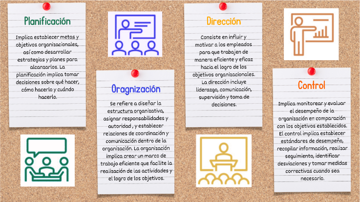

Temas
I.II Administración.

Según Idalverto Chiavenato, el contenido de la administración varía conforme a la teoría aplicada: para la Administración
Científica, lo importante son los métodos y procesos de trabajo del operario; para la Teoría Clásica, la Administración implica previsión,
organización, dirección, coordinación y
control del trabajo realizado en toda organización; para la Teoría de las Relaciones Humanas, la administración debe buscar los
mejores resultados estableciendo condiciones que permitan la integración de las personas en los grupos sociales y la satisfacción de las necesidades individuales
[5].
En la sociedad moderna, la administración se volvió vital e indispensable. En una sociedad de organizaciones donde la complejidad y la interdependencia de éstas
constituye un aspecto crucial, la administración es el factor clave para la mejora de la calidad de vida y para la solución de los problemas complejos actuales.
La administración enfocada a la gestión empresarial se refiere al conjunto de principios, técnicas y procesos utilizados para
planificar, organizar, dirigir y controlar los recursos y las actividades de una organización con el fin de lograr sus objetivos de manera eficiente y efectiva,
siendo muy similar a la Teoría clásica de la administración, la cual fue mencionada anteriormente.
En la gestión empresarial se abarcan diversas áreas funcionales, como la gestión de recursos humanos, la
gestión financiera, la gestión de operaciones, el marketing
y la estrategia empresarial. Estas áreas están interrelacionadas y se complementan entre sí para garantizar el funcionamiento
eficiente de la organización en su conjunto.
Fayol define el acto de administrar como planear, organizar,
dirigir, coordinar y controlar. Las funciones administrativas abarcan los elementos de
la administración, es decir, las funciones del administrador:
- Planificación: Implica establecer metas y objetivos organizacionales, así como desarrollar estrategias y planes para alcanzarlos. La planificación implica avizorar el futuro y trazar el programa de acción.
- Organización: Se refiere a diseñar la estructura organizativa, asignar responsabilidades y autoridad , y establecer relaciones de coordinación y comunicación dentro de la organización. La organización implica construir las estructuras materiales y sociales de la empresa.
- Dirección: Consiste en influir y motivar a los empleados para que trabajen de manera eficiente y eficaz hacia el logro de los objetivos organizacionales. La dirección incluye liderazgo, comunicación, supervisión y toma de decisiones.
- Control: Implica monitorear y evaluar el desempeño de la organización en comparación con los objetivos establecidos. El control implica verificar que todo suceda de acuerdo con las reglas establecidas y las órdenes dadas.
A continuación, se describen brevemente las funciones principales de la administración en gestión empresarial:
Imagen 2. Funciones administrativas principales del administrador.
La administración en gestión empresarial busca optimizar el uso de los recursos disponibles, como el talento humano, el capital, los activos y la tecnología, con el objetivo de maximizar la eficiencia, la productividad y la rentabilidad de la organización. Además, la administración también se ocupa de aspectos relacionados con la toma de decisiones, la resolución de problemas, la gestión del cambio y la adaptación a un entorno empresarial en constante evolución.
En resumen, la administración en gestión empresarial es el proceso de planificar, organizar, dirigir y controlar los recursos y las actividades de una organización para lograr sus objetivos de manera efectiva y eficiente. Es una disciplina clave en la gestión empresarial que involucra la aplicación de principios y prácticas de gestión en diversas áreas funcionales para garantizar el éxito y el desarrollo de la organización.
Estos ejemplos ilustran cómo la administración en gestión empresarial se aplica en la vida real para planificar, organizar, dirigir y controlar las actividades de una organización con el objetivo de alcanzar sus metas y objetivos de manera efectiva y eficiente en diversos campos y situaciones empresariales.
- Planificación: Una empresa de tecnología decide expandirse internacionalmente y establece un plan estratégico que incluye la identificación de nuevos mercados, la inversión en investigación y desarrollo de productos adaptados a esas regiones y la creación de un cronograma para la expansión gradual.
- Organización:
En una fábrica de automóviles, se crea una estructura organizativa que divide la producción en departamentos específicos, como ensamblaje, pintura, y calidad, con gerentes y equipos asignados a cada uno. Cada departamento tiene roles y responsabilidades claramente definidos.
- Dirección:
Un gerente de ventas de una tienda minorista motiva a su equipo mediante el establecimiento de objetivos de ventas mensuales, proporcionando capacitación en técnicas de ventas efectivas y ofreciendo incentivos basados en el desempeño, como bonos por alcanzar metas.
- Control:
Una cadena de restaurantes utiliza sistemas de punto de venta y análisis de datos para monitorear las ventas diarias en todas sus ubicaciones. Si una ubicación tiene un rendimiento inferior al promedio, se toman medidas correctivas, como cambiar el personal o ajustar el menú.